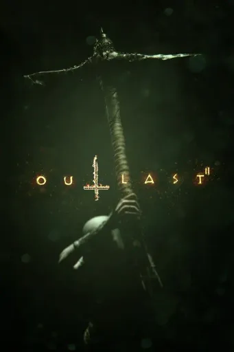

Outlast 2
Descripción
Outlast 2 es un videojuego de terror psicológico en primera persona desarrollado por Red Barrels. En esta secuela, te enfrentas a nuevos horrores mientras investigas una misteriosa secta en las montañas de Arizona.
Requisitos Mínimos
- Sistema operativo: Windows 7 de 64 bits
- Procesador: Intel Core i3-530 / AMD A6-3620
- Memoria: 4 GB de RAM
- Gráficos: Nvidia GeForce GTX 460 / ATI Radeon HD 6850
- DirectX: Versión 11
- Red: Conexión de banda ancha a Internet
- Almacenamiento: 30 GB de espacio disponible
Requisitos Recomendados
- Sistema operativo: Windows 10 de 64 bits
- Procesador: Intel Core i5-4590 / AMD Ryzen 5 1500X
- Memoria: 8 GB de RAM
- Gráficos: Nvidia GeForce GTX 970 / AMD Radeon RX 480
- DirectX: Versión 11
- Red: Conexión de banda ancha a Internet
- Almacenamiento: 30 GB de espacio disponible